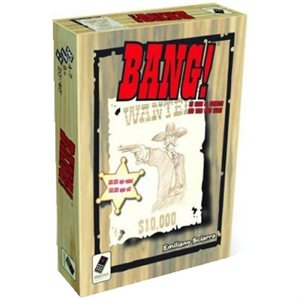
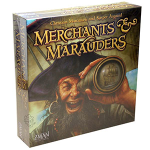
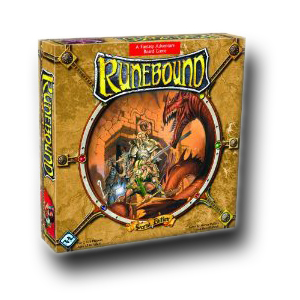

As always, these are just my personal thoughts on these games. If a game sounds interesting, or if it sounds like I don't know what the heck I'm talking about, you should hop on over to BoardGameGeek. You'll be able to find plenty of other reviews, forums and resources on these and many other boardgames.
"Bang!"
This is a pretty light little group game with a cool western theme. Some of the elements that help make this game enjoyable are the varying abilities and stats on the different characters and weapons, the intersting range mechanic where you need weapons or cards with greater range in order to attack players sitting further away from your position at the table, and the role selection where one player will be the sheriff while others will be outlaws, renegades or deputies depending on the amount of players.
Now while it can be a fun diversion, the game is not without issues. For starters, while the game says that you can play with as little as four players, I highly recommend that you have at least five. With only four players the odds seem pitted against the sheriff a bit too heavily. Another issue that can arise is an extended and drawn out stand off between the last two players. Because there is a player elimination mechanic the rest of your group may have to sit back and twiddle their thumbs while the final two players play a seemingly endless string of "bang" attack cards and miss cards. This may not be the most amazing group game out there but with a very low price point, some interesting mechanics and a cool little used theme it is definitely a game worth checking out.
"Merchants and Marauders"
If you've ever played Sid Meier's Pirates then you can start by imagining almost all of what that game offers crammed into a boardgame experience. This is a great game with a ton of interaction between the players, many different choices to make and ways to win the game and an incredibly fun and under utilized theme. Really, how many games let you sail the seas as a scurvy sea dog?
If there is a flaw in the game, it's that there are almost too many options. There are so many different paths to victory that it can be difficult at times to keep track of all the options before you. The game can go fairly smooth and simple if a player is choosing to operate as merchant rather than a pirate, so if you're playing with someone who is doing this make sure to rain down some piratical pain upon them until they correct their ways. A lot of the time I recommend playing a game before going out and buying it, but this one is a definite no brainer.
"Runebound"
By all logical means, I should absolutely love this game. There are a host of characters to choose from with diverse abilities, a leveling up progression system, a ton of weapons, armor and items to buy or discover and plenty of combat. Of all the boardgames I own, this one captures the feel of playing an epic dungeon crawl style video game, which in my mind is a great thing.
And don't get me wrong I do enjoy a game of it every now and then, but it somehow doesn't quite live up to what I was expecting out of it. I think the main problems for me are that towards the end of the game it seems to drag on a bit and the movement system is a bit convoluted, especially for new players which can add unnecessary downtime to the game. I think if the game was played with a variant that sped up the end game I would enjoy this one a lot more than I do now.
